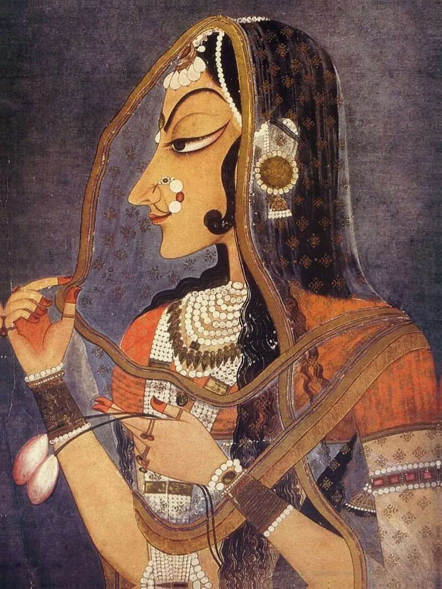

Radha (Bani-Thani)
Details
SUBJECT MATTER :- This is a vertical stylised portrait of a courtesan, Bani-Thani under the rule of Sawant Singh of Kishangarh. The king was a great devotee of Lord Krishna and aso a follower of Vallabhacharya Sect. He fell in love with an attendent (Radha) of his step mother and they later married.
DESCRIPTION:- This is one of the most famous artwork from Kishangarh of Indian History of painting. The female attendent of Sawant Singh's step mother did not have the name mentioned in the painting but was called Bani-Thani, who was portrayed as Radha.Bani-Thani means well dressed and well groomed. She has high sloping forehead with elongated face, bulging well cutted lips and pointed and long nose. She also has pointed chin. Her long black tresses reaching down from her shoulders down to her waist. She is holding the edge of her transparebt orhini with her her long tapering fingers of her right hand. Orhini is decorated with her golden motifs. Taste and costumes od the contemporary Rajput royality is reflected from her dressing and jewellery. She is wearing a white pearl necklace around her neck. In her left hand she has two lotus buds of pink colour.
The background of the painting is in deep blue color. The lines made are thin andsharp. Nihal Chand used Bani-Thani, the court dancer as his model for Radha and Sawant Singh as Krishna. Her body is painted in peach color. On whole, the painting is beautiful with its color scheme.
The Government of India issued a stamp in 1973 with this painting, making it timeless. This painting is also called Indian Mona-Lisa.
Personally this is my faviorite painting.
HUMAN VALUES:
1.Importance of keeping ourself well dressed and well groomed all the time.
2.Right dress code according to occasion and prefession.